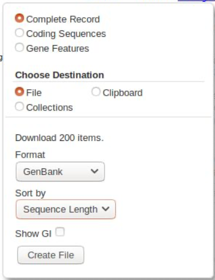

Fundamentals: Working with GenBank¶
There are many ways to get data from GenBank, including NCBI’s command line tools. However, if you’re new to working with GenBank data, using the online portal is the easiest introduction. These instructions imagine that you’re looking for the GenBank data described in the preparing mitogenome data tutorial, i.e. that we want to acquire a set of Coleoptera mitogenomes and a set of mitogenomes from a subset of other Arthropod orders. We’re going to search only the RefSeq database, a subset of the nt database, and generally a good starting place.
Getting Coleoptera data¶
Exercise
Go to the genbank nucleotide core database
In the search bar, type the following:
"Coleoptera"[Organism] AND srcdb_refseq[PROP] AND mitochondrion[filter]
We are asking for any sequences with Coleoptera in the Organism field, from the RefSeq database, and from the mitochondrion only. You should get around 300 sequences as of December 2020.
Exercise
We will download all of these as a GenBank file - click on the link and select as follows:
Then click and download it.
At this point, we strongly suggest you name this file sensibly. It’s worth the keystrokes to name something accurately so you know what it is later. We would usually include that it’s from genbank, what the searchterms were, and the date, eg: “GBdl_RefSeq_ColeopMT_2021-01-12.gb”
The file we have just downloaded is a GenBank-format file. This contains sequence data, like a fasta file, but also contains annotations and features. Annotations are metadata about the sequence entry, such as the authors of the sequence, the taxonomy of the source specimen, and other information. Features are metadata about specific sections of the sequence data, such as genes. Features are often called annotations as well - indeed, generally if someone is talking about “annotating” a sequence they mean finding and marking up the gene regions in that sequence.
Exercise
If the idea of gene features/annotations is new to you, you can visualise these by going back to our search results on GenBank. Choose a sequence, and below it you’ll see a Graphics link. Click this and it will load a visual representation of the Features on that record - you should be able to see how the different genes are laid out on this mitochondrion.
Getting non-Coleoptera data¶
The process is exactly the same, except we use a more specific search term:
"Blattodea"[Organism] OR "Hemiptera"[Organism] OR "Lepidoptera"[Organism] OR "Diptera"[Organism] OR "Araneae"[Organism] OR "Collembola"[Organism]) AND srcdb_refseq[PROP] AND mitochondrion[filter]
Next steps¶
We don’t need these GenBank files, we’ve already prepared a subset of this data to work with, so you can head back to the preparing mitogenome data tutorial.